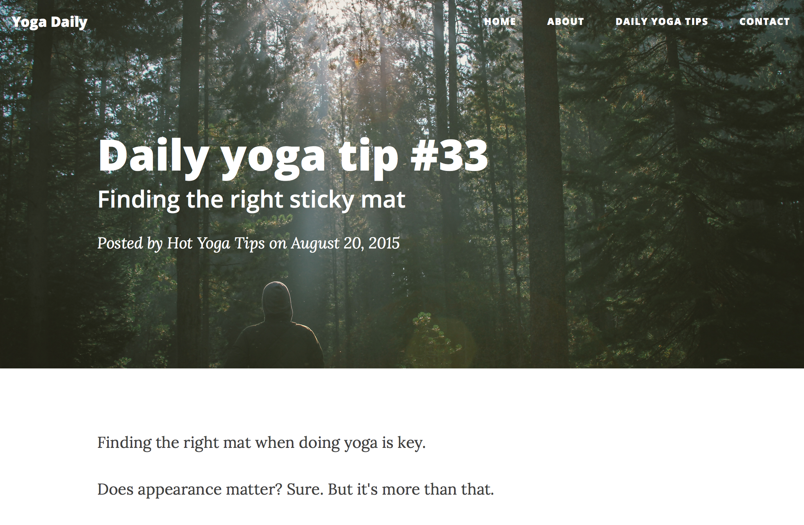

Yoga Daily
A custom built WordPress blog, featuring daily yoga tips curated from around the web.
Visit the website


Quick Facts
- Atque pariatur excepturi necessitatibus alias cupiditate, earum deserunt aspernatur sun
- Since the site has gone live, I have seen 25% increase in traffic month over month.
- Despite it being a passion project, building the blog from the bottom taught me about creating custom post types in WordPress, trouble shooting cross browser compatibility issues, and more.
The task
Yoga Daily is a WordPress blog I created, inspired by ___. Something else here about why Yoga is a passion of mine, even though I do not like yoga.
What I did
In order to build the Yoga Daily Blog from the ground up, here's what I did:
- Brainstorming - What do I want to achieve with my site? How will I accomplish this through my development/design choices?
- Content architecture - How will the content exist on the site?
- Mockups - Loosely getting an idea of the key components of the site
- Development - Building out the custom WordPress theme, using the Bootstrap framework. Also adding SEO-friendly markup to the code.
- Production - Getting the Yoga Daily blog live on the internet so the world could see
Outcome
Since I first began the site in April 2015, I have seen a 25% increase in page traffic month over month. While the blog may be a passion project, building it from the bottom taught me a lot.
Including:
- Custom post types - Which I created for my guest contributers
- Troubleshooting cross browswer compatibility - A few of my design choices did not play nicely across some browsers. This gave me the chance to learn more about making a site look seamless across all web browsers.
- Git and Github - This was first opportunitiy I had to use Git and Github while creating a project of my own.